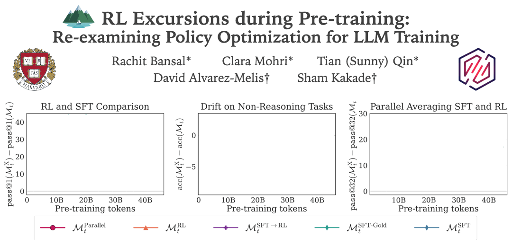
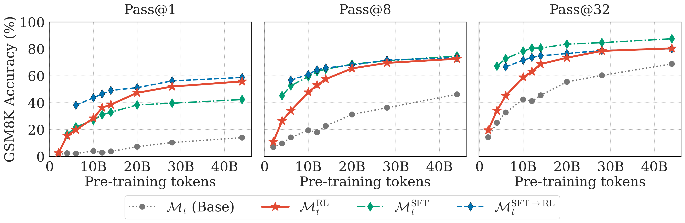
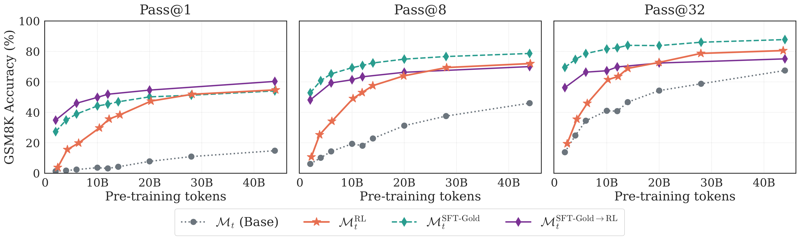
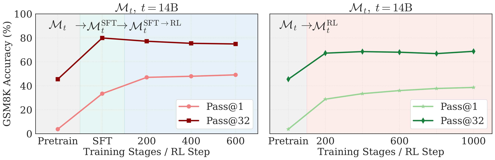
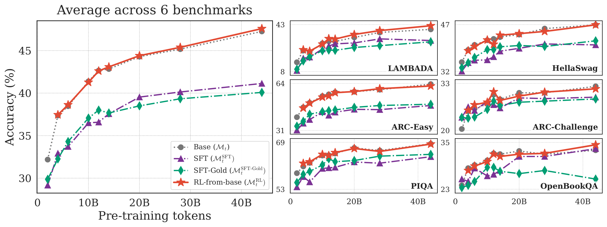
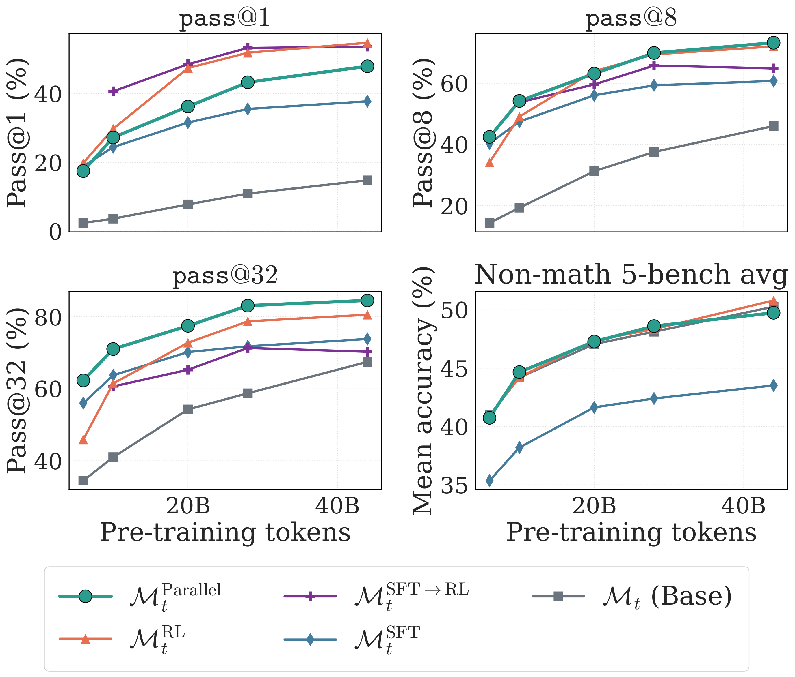

Figure 1. Overview of our main findings. We compare several post-training recipes applied to intermediate pre-training checkpoints: direct RL, SFT (one solution per question), SFT-Gold (multiple solutions), the standard SFT→RL pipeline, and parallel averaging of RL and SFT gradients. (1) RL is effective early in pretraining, improving both pass@1 and pass@32 from as few as 4B tokens. (2) RL outperforms SFT when multiple ground-truth demonstrations are unavailable. (3) SFT degrades general capabilities, while RL leaves them unchanged. (4) Parallel averaging of RL and SFT gradients achieves the best pass@32 across all checkpoints.
As of 2026, Large Language Model (LLM) training follows a standard pipeline: pretraining → supervised fine-tuning (SFT)1 → reinforcement learning (RL) via verifiable rewards2. These stages use fundamentally different objectives: pretraining and SFT employ a Next-Token Prediction (NTP) objective on a static external dataset ("off-policy"), whereas RL employs a policy optimization objective on the model's own generations ("on-policy")3.
Under this standard regime, RL is only used after a substantial amount of NTP training. Is that fundamentally necessary, or just a design choice? And while it's widely observed that post-training dramatically improves reasoning4, the actual influence of RL on model capabilities has been the subject of recent debate5. In this work, we attempt to answer three fundamental questions:
1. When does RL work? At what point during training does the model's self-generated data become good enough for on-policy learning to yield meaningful signal?
2. What does RL do? Does it teach the model genuinely new capabilities, or does it merely sharpen what the model already knows? And does it preserve or degrade skills inherited from pretraining?
3. How should RL be used? Can we do better than the standard sequential pipeline of SFT then RL?
To answer these questions, we pretrain an LLM from scratch on a high-quality, reasoning-heavy corpus, save intermediate checkpoints, and apply RL, SFT, and SFT→RL to each checkpoint head-to-head. We use math reasoning as our testbed since it provides a clean setting with unambiguous and verifiable rewards. Here's what we found:
When does RL work? (Results 1 & 2)
- RL is effective surprisingly early in pretraining. Models start learning from their own generations well before Chinchilla-optimal token counts. On GSM8K, direct RL matches or outperforms the full SFT→RL pipeline.
- RL outperforms SFT when ground-truth demonstrations are scarce. With only one solution per problem (a realistic setting), RL substantially outperforms SFT on pass@1. SFT only regains the edge when it has access to many high-quality solutions per problem, which is rarely practical.
What does RL do? (Results 3 & 4)
- RL can expand the output distribution. Contrary to recent claims that RL only sharpens, we find that direct RL improves both pass@1 and pass@k. The sharpening effect only arises when RL follows SFT—it's an artifact of the pipeline, not the objective.
- RL preserves general capabilities; SFT doesn't. SFT consistently degrades non-math benchmarks by 4–8 percentage points, while RL leaves them essentially unchanged.
How should RL be used? (Result 5)
- Parallel averaging of RL and SFT gradients combines their strengths. A simple algorithm that averages RL and SFT updates at each step achieves the best pass@32 across all checkpoints while preserving general capabilities.
Together, these findings suggest that many assumptions about RL in LLM training are artifacts of the current pipeline, not fundamental properties of the objective—and that LLM training might benefit from an expanded use of RL.
Experimental Setup
Pretraining checkpoints
We pretrain a 1B-parameter decoder-only model (OLMo2 architecture6) from scratch on 50B tokens of a high-quality mixture (DOLMino, from OLMo2), saving intermediate checkpoints throughout7. We then take these checkpoints and run different "post-training" pipelines from each checkpoint.
Pretraining details
Training pipelines
Let Mt be the base checkpoint after t pretraining tokens. We compare:
Direct RL: (Mt → MtRL) Run RL (GRPO11) directly on the base checkpoint. No ground-truth reasoning traces—just the model's own generations and a binary reward.
SFT: (Mt → MtSFT) Train on one randomly chosen ground-truth solution per question using the NTP objective. This is the realistic SFT setting.
SFT-Gold: (Mt → MtSFT-Gold) Train on all ground-truth solutions per question (~23 per problem on average). An idealized setting that's impractical in many domains.
Standard pipeline: (Mt → MtSFT → MtSFT→RL) SFT followed by RL. This is the typical modern recipe and our gold-standard baseline.
Parallel averaging: (Mt → MtParallel) Average RL and SFT gradient updates at each training step (more on this in Result 5).
Data and evaluation
Training data: OpenMathInstruct12—math questions with multiple ground-truth solutions per question.
Benchmarks: GSM8K13 (grade-school math) and MATH14 (competition-level problems).
Metrics: pass@k15 for k ∈ {1, 8, 32} at temperature T = 0.6.
What is pass@k? pass@1 measures how often the model gets the right answer on its first try. pass@k (for k > 1) measures whether any of k sampled solutions is correct—it tells us about the upper bound on the model's reasoning capabilities.
Note on evaluating base checkpoints
Pretraining checkpoints don't reliably follow instruction formatting, so we evaluate them with 8-shot prompting (few-shot examples teach the format). All post-trained models (SFT/RL) are evaluated 0-shot.
Result 1: RL works surprisingly early.

Figure 2. GSM8K pass@k across checkpoints. RL-only improves early and matches SFT→RL after enough pretraining. SFT baselines use one ground-truth solution per problem.
As early as 4B pretraining tokens, running RL directly on the base checkpoint gives meaningful improvements. For example, pass@1 accuracy jumps from ~2% (base checkpoint) to ~18% after RL. This is before we've even hit the Chinchilla-optimal8 token count (20B) for this model size—RL is helping even when the model is still "under-trained" by conventional standards.
More importantly, RL-only competes with the standard pipeline. By 10B+ tokens, the RL-only model outperforms SFT on pass@1 and performs on par with the full SFT→RL pipeline. This is quite remarkable because the RL-only model never sees ground-truth reasoning traces. It develops reasoning capabilities entirely from self-generated solutions and reward feedback, suggesting that expert-written solution traces may not be strictly necessary to unlock certain reasoning behaviors.
On the harder MATH benchmark, direct RL still consistently improves over the base checkpoint (5–10% gains in pass@k), but doesn't fully catch up to SFT→RL. Competition-level problems seem to need more than what early on-policy learning alone can provide. We found that targeted pretraining data composition (adding more math-specific tokens) is a much stronger lever for improving RL effectiveness than scaling model size—a 1B model pretrained on 60B math-heavy tokens outperforms a 4B model pretrained on the original 50B mix.
A caveat: seed brittleness on early checkpoints
Between 4B and 10B pretraining tokens, RL performance can be sensitive to random seed. Some seeds give significant improvements; others barely improve at all. Interestingly, both good and bad seeds achieve similar training rewards—suggesting the model sometimes "games" the reward signal in ways that don't transfer to test-time problem-solving. This brittleness resolves by ~10B tokens.
Takeaway: RL from early checkpoints is effective, but task difficulty matters. For easier problems, it can match the standard pipeline. For harder problems, pretraining data composition is a key lever.
Result 2: RL outperforms SFT when demonstrations are scarce.

Figure 3. GSM8K results with SFT-Gold (all ~23 solutions per problem). With abundant ground-truth solutions, SFT-Gold surpasses RL on pass@8 and pass@32. But this idealized setting is rarely practical.
In practice, getting just one high-quality solution trace per problem can be expensive. Getting 20+ unique solution traces is an unscalable and infeasible strategy in most settings.
We compared RL against two SFT variants:
- SFT (realistic): one randomly chosen solution per problem
- SFT-Gold (idealized): all ~23 ground-truth solutions per problem
The results are clear: with only one solution per problem, RL substantially outperforms SFT on pass@1 and is competitive on pass@8 and pass@32. RL bootstraps diverse reasoning strategies from its own generations, while SFT with a single demonstration is bottlenecked by the quality and diversity of that single trace16.
When SFT has access to many diverse solutions (SFT-Gold), the story changes—SFT-Gold surpasses RL on pass@8 and pass@32, and SFT-Gold→RL is the strongest recipe overall on pass@1. This makes sense: diverse ground-truth traces provide coverage benefits that on-policy exploration may not match.
But here's the thing: the SFT-Gold setting is unrealistic for most domains. In the real world where you typically have at most one demonstration per problem, RL is the stronger post-training objective.
Takeaway: In the realistic setting in which ground truth demonstrations are scarce, the RL objective is more effective.
Result 3: Sharpening or expansion? It depends on the pipeline.
One of the debates in recent work is about what RL actually does to a model's output distribution.
- Sharpening: pass@1 improves but pass@k (for large k) stagnates or decreases. The model concentrates on known reasoning paths without discovering new ones.
- Expansion: Both pass@1 and pass@k improve. The model discovers genuinely new correct reasoning paths.
Many recent works have claimed that RL mostly sharpens the distribution51718. But we found that whether you see sharpening or expansion depends entirely on the training pipeline.

Figure 4. Training dynamics on the same pretraining checkpoint. Left: SFT→RL shows sharpening (pass@1 up, pass@32 down during RL). Right: Direct RL shows expansion (both pass@1 and pass@32 up).
Standard pipeline (SFT→RL) → sharpening
When RL comes after SFT, we reproduce the sharpening effect others have observed: pass@1 keeps improving during RL, but pass@32 slightly decreases. During SFT, the model already learned ground-truth solutions for these questions. So when RL kicks in, it mostly refines and concentrates around those paths rather than discovering new ones.
Direct RL → expansion
When we skip SFT and run RL directly on the base checkpoint, both pass@1 and pass@32 improve. Without prior exposure to ground-truth solutions, the model actually explores and discovers new reasoning paths through on-policy learning.
This is an important nuance: the sharpening effect commonly attributed to RL is actually an artifact of a preceding SFT stage, not of the RL objective itself. SFT constrains exploration; RL doesn't.
Takeaway: Whether the use of RL sharpens or expands the distribution depends on the training pipeline.
Result 4: RL preserves general capabilities; SFT doesn't.

Figure 5. Performance on six general-purpose (non-math) benchmarks. SFT consistently degrades performance by 4–8 pp on average. RL leaves these capabilities essentially unchanged.
A natural concern with applying RL to intermediate pretraining checkpoints: does it wreck everything else the model learned?
We evaluated on six general-purpose benchmarks (LAMBADA, HellaSwag, ARC-Easy, ARC-Challenge, PIQA, OpenBookQA) and found a striking asymmetry:
- SFT (both regular and SFT-Gold) consistently degrades general capabilities by 4–8 percentage points on average across benchmarks.
- RL leaves these capabilities essentially unchanged.
This is a meaningful practical advantage. If you're doing post-training with RL directly on a base checkpoint, you get the reasoning improvements without paying a tax on everything else. SFT, on the other hand, appears to overwrite some of the model's general knowledge while teaching it to reason about math.
Takeaway: RL is a more surgical intervention it improves what you want without degrading what you don't want.
Result 5: Parallel averaging of RL and SFT.
The previous results expose a clear complementarity between RL and SFT:
- RL expands the distribution, discovers new reasoning paths, and preserves general capabilities. But it needs the base model to have enough latent capability to bootstrap from1920.
- SFT provides reliable supervision from ground-truth traces and works even when the model is weak. But it can sharpen the distribution and degrade general capabilities.
What if we could have both? We propose a simple algorithm: parallel averaging.

Figure 6. Parallel averaging achieves the strongest pass@32 across all checkpoints, surpassing the standard SFT→RL pipeline, while preserving general capabilities.
At each training step, starting from the same parameter snapshot, we:
- Run one batch through the RL optimizer → get RL gradient update.
- Run one batch through the SFT optimizer → get SFT gradient update.
- Average the two updates and apply to the model.
Critically, the two optimizers maintain independent Adam states (first- and second-moment estimates), so they don't interfere with each other's adaptive step sizes.
Algorithm: Parallel Averaging
Input: parameters ; optimizer states ; batches ; learning rates
- — snapshot current parameters
- — RL gradient at snapshot
- — SFT gradient at snapshot
- — RL optimizer update
- — SFT optimizer update
- — average and apply
return
What we found
Across every pretraining checkpoint, parallel averaging achieves the strongest pass@32 among all recipes that use a single demonstration per problem—surpassing direct RL, SFT, and the standard SFT→RL pipeline. It also preserves general capabilities on par with direct RL, whereas every SFT-based recipe regresses by 5–8 percentage points.
The trade-off: pass@1 is somewhat lower compared to direct RL or SFT alone. But the fact that a simple equal-weight average already outperforms on pass@32 suggests there's a lot of room for more sophisticated combinations—adaptive weighting, scheduling, or importance sampling on top of independent optimizer states.
Takeaway: RL and SFT signals are complementary. Combining them simultaneously (rather than sequentially) can get you the best of both worlds.
What's Next?
Our results paint a nuanced picture: many assumptions about RL in LLM training are actually artifacts of the current pipeline, not fundamental properties of the objective.
Related work
Our study connects several active threads. The modern post-training stack builds on RLHF and preference-optimization methods22122, typically realized with policy-gradient algorithms such as PPO and GRPO311 and scalable RL infrastructure23. A fast-growing line of work studies RL as a pretraining-time objective2425262728, and how pretraining shapes what post-training can later achieve2019. A parallel debate asks whether RL expands or merely sharpens a model's capabilities51718, and how many rollouts RL actually needs29.
The big picture
If RL is effective well inside pretraining, and the pretraining data mix controls its ceiling, the natural question is: what should pretraining look like when RL is treated as a first-class objective rather than a final post-training step? Our parallel-averaging experiment is an early data point, but there's a lot to explore—adaptive scheduling, different weighting schemes, smarter rollout strategies.
Important caveats
- Task scope: We focused on math reasoning with GRPO. Different RL algorithms or tasks (coding, general reasoning, instruction following) might behave differently.
- Data mixture matters: Our pretraining corpus had ~20% math and ~30% reasoning content. "RL readiness" likely depends heavily on what's in the pretraining mix.
- Model scale: All results are at 1B and 4B parameters. Whether these findings hold at frontier scale is essential future work.
This is a living document and we're actively working on this project. If you have questions, ideas, or want to discuss any of these findings, feel free to reach out!
Citation
Please cite this work as:
@article{rbcmsq2026rlexcursions,
author={Rachit Bansal* and Clara Mohri* and Tian (Sunny) Qin* and David Alvarez-Melis and Sham Kakade},
title={RL Excursions during Pre-training: Re-examining Policy Optimization for LLM Training},
journal={arXiv preprint arXiv:2606.04272},
year={2026},
eprint={2606.04272},
archivePrefix={arXiv},
url={https://arxiv.org/abs/2606.04272}
}